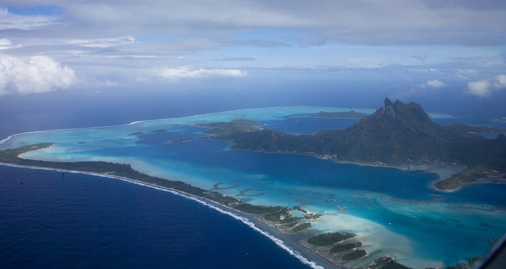
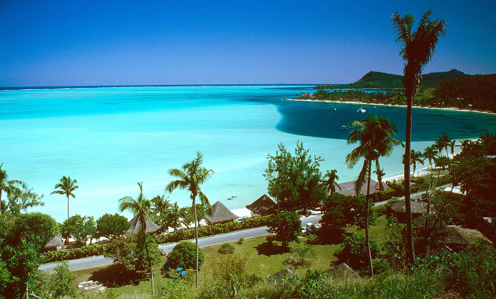
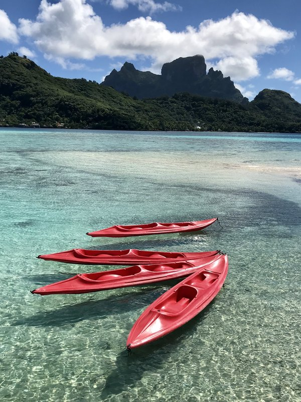
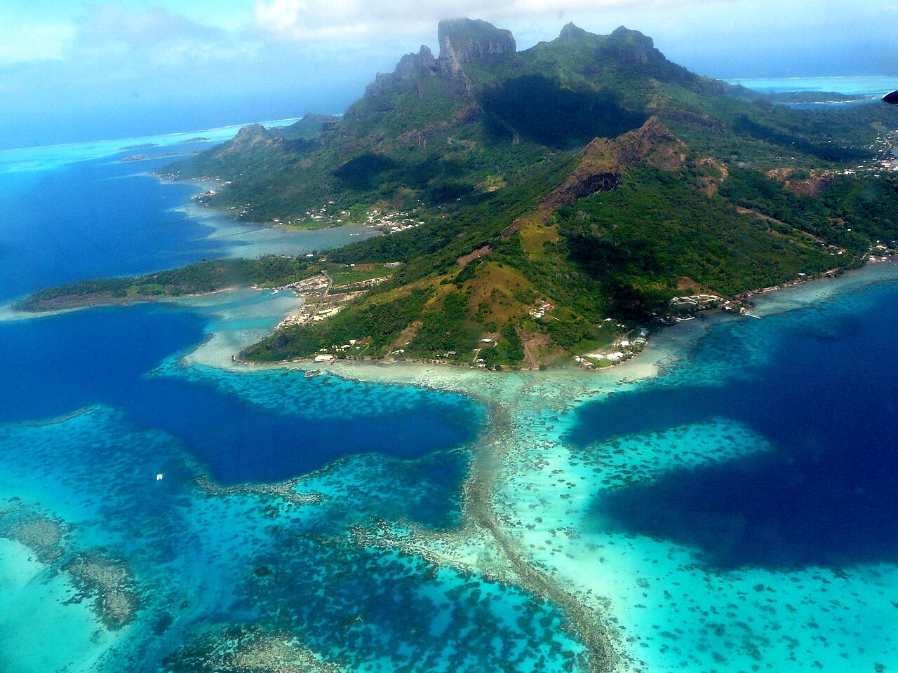
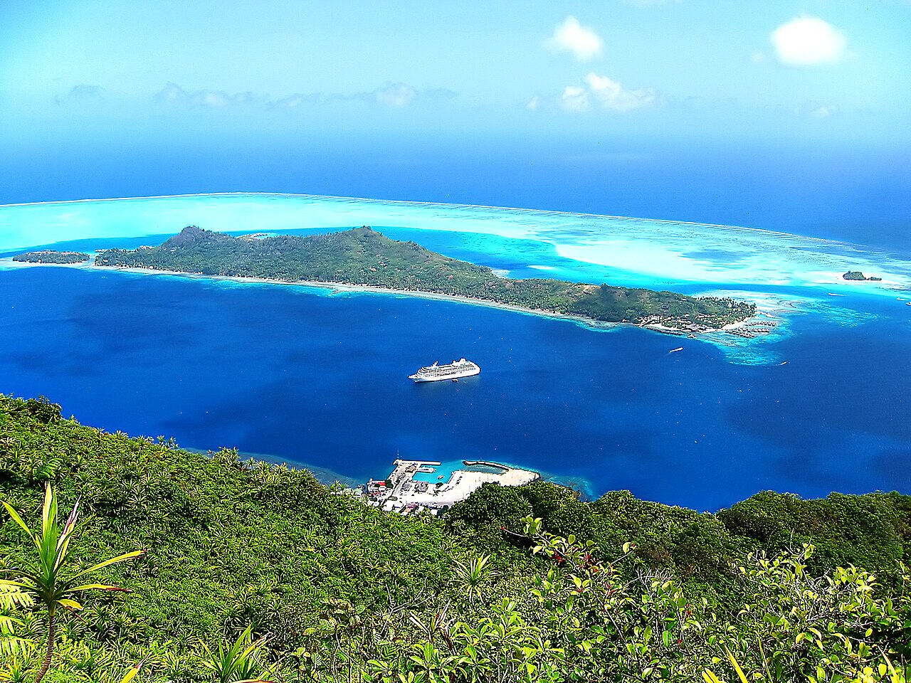
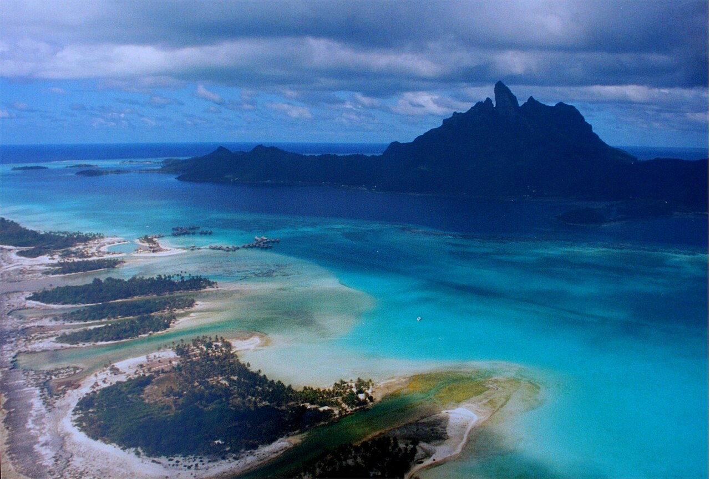
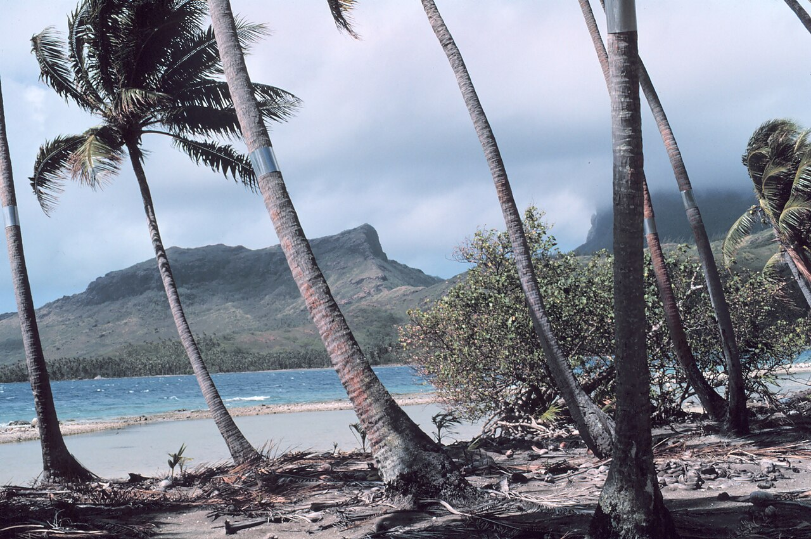
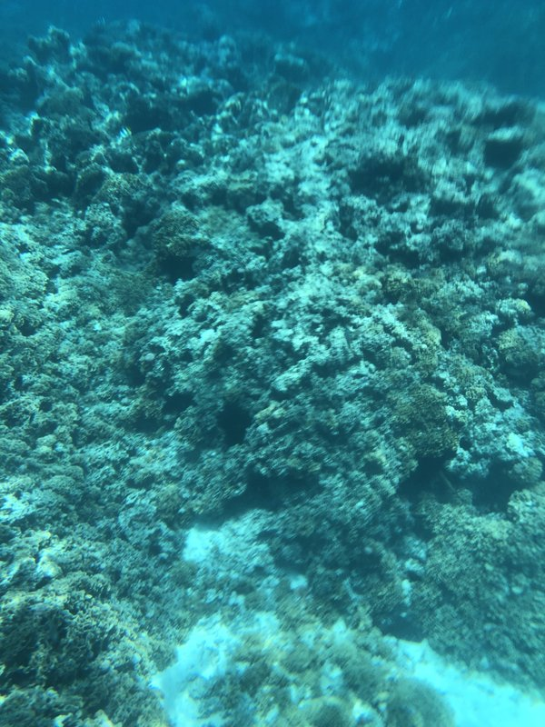

🏨 From Hotel: 🚕 20 min → Shark & Ray Lagoon Snorkel Cruise

🚕 25 min → Marae Fare Opu
🚕 15 min → Matira Point

🏨 From Hotel: 🚕 25 min → Mount Otemanu Viewpoint

🚕 10 min → Bora Bora 4×4 Safari

🚕 5 min → Vaitape Village

🏨 From Hotel: 🚕 30 min → Bora Bora Scenic Flight

🚕 20 min → ATV Mountain Adventure

🚕 20 min → Coral Garden

Bora Bora's reputation as the world's most beautiful island rests on a specific geography: an extinct basalt volcano ringed by a shallow lagoon of extraordinary clarity, enclosed within a coral reef. That geometry — mountain, lagoon, reef, open Pacific — is visible from every point on the island and from the air above it. The Conrad on Motu To'opua sits inside the lagoon itself, making the reef and the mountain the view from every direction. Three days is enough to see the lagoon from its surface, from a 4×4 on the ridgeline above it, and from the air above it.